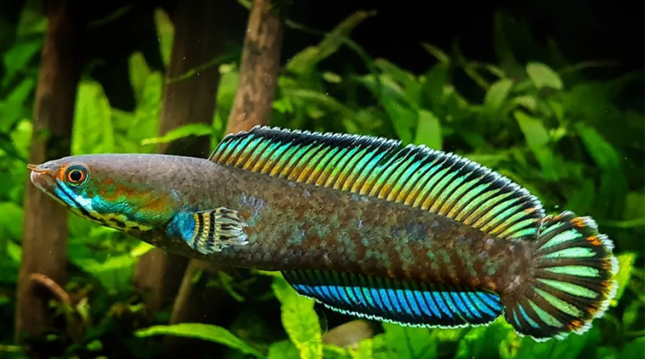

Mengapa aku selalu ragu? Aku tahu ini bukan. jalan yang ingin kutempuh seumur hidup tapi setiap kali. hendak melangkah keluar, ketakutan itu datang. Keamanan yang kubangun selama ini terasa begitu sulit untuk dilepaskan, meski aku tahu ada yang lebih baik menungguku di luar sana.
Namun, jika aku terus terjebak di zona nyaman ini, akankah aku menyesal? Apakah nanti aku, akan melihat kesempatan yang hilang dan berpikir, "Seandainya aku dulu berani"? Tapi, aku juga takut jika pilihan itu ternyata salah. Ah, hidup memang penuh dengan ketidakpas
apa itu Senandika?| Ikan Unggulan | ||
|---|---|---|
|  | ||
| Nama | Channa Androo | |
| Jenis | Ikan Hias | |
| Detail |
|
|